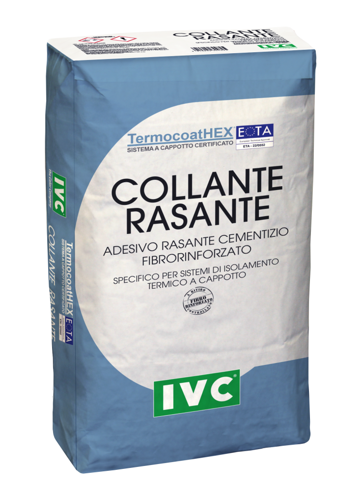

TERMOCOATHEX
Adesivo-rasante cementizio fibrorinforzato per sistemi di isolamento termico esterno a cappotto.
Dettagli tecnici
- Base cementizia con cariche minerali selezionate.
- Fibre polimeriche e additivi specifici.
- Per incollaggio e rasatura dei sistemi ETICS.